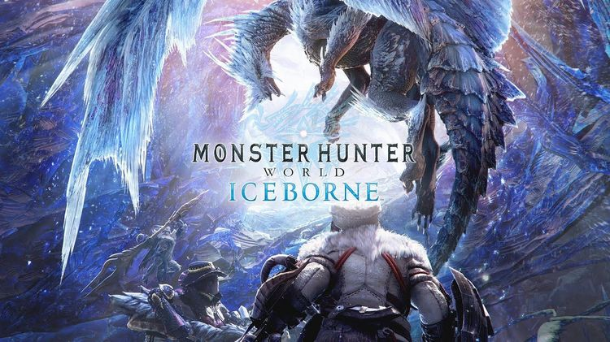

- 몬스터 헌터 더블 크로스
- 몬스터 헌터 월드 - 아이스본
- 몬스터 헌터 라이즈

《몬스터 헌터: 월드》의 확장 컨텐츠. PS4/XB1은 2019년 9월 6일 출시 했으며, PC는 본래 동년 겨울 출시 예정이였으나 발매일이 약간 늦춰져 2020년 1월 10일로 확정되었다.
프로듀서는 마찬가지로 츠지모토 료조이며, 메인 디렉터는 《몬스터 헌터 더블 크로스》의 디렉터를 맡기도 한 이치하라 다이스케다.
월드의 디렉터였던 토쿠다 유야는 월드의 무료 업데이트를 지휘했으며, 아이스본 발매 이후 세컨드 디렉터를 맡았고 따로 차기 프로젝트를 진행중이라고 한다.
공식 약칭은 MHW:I